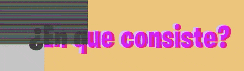
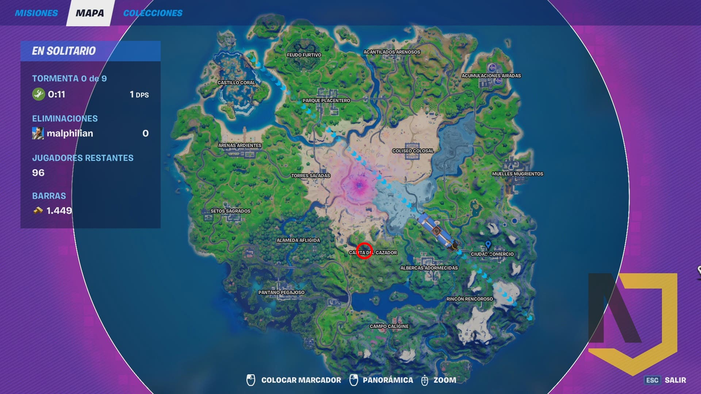
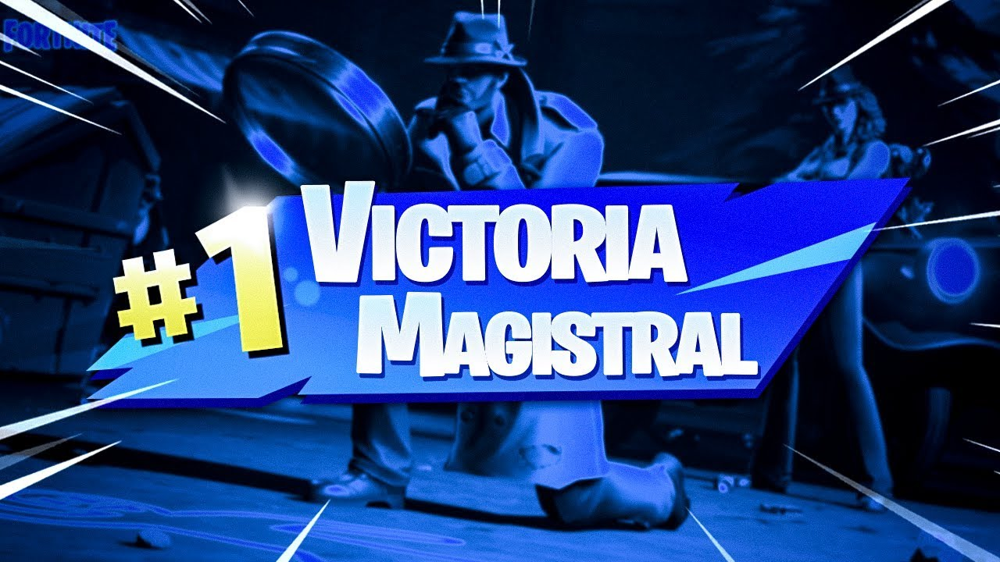
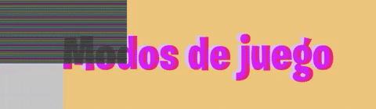
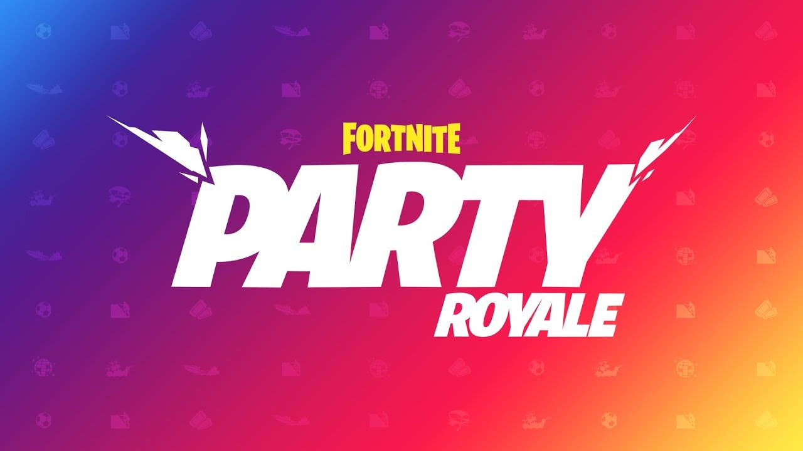
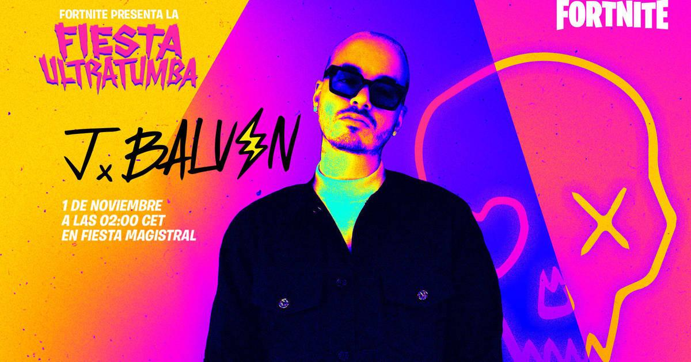
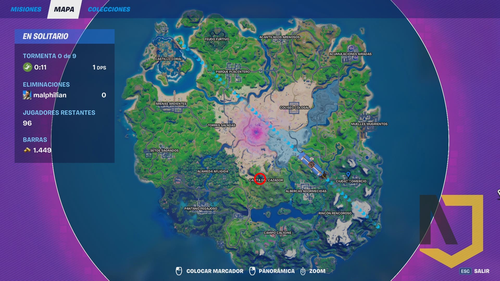
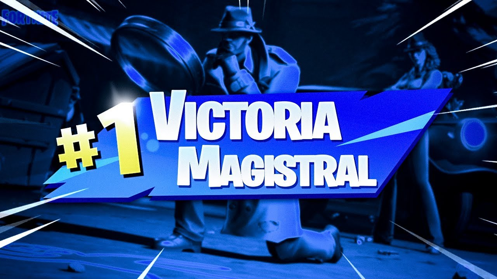
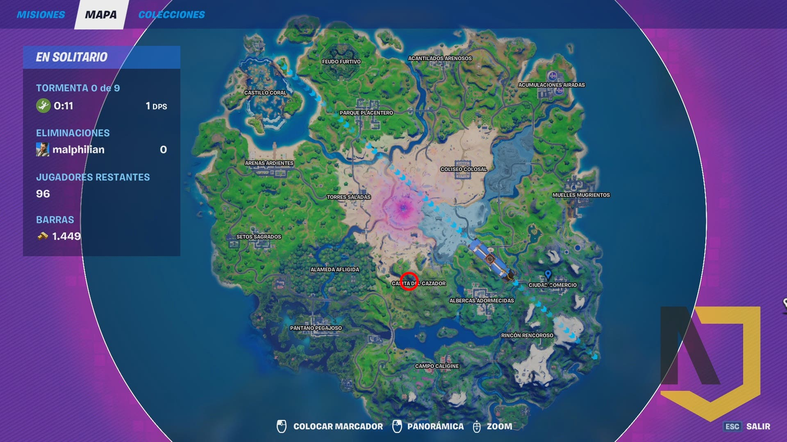
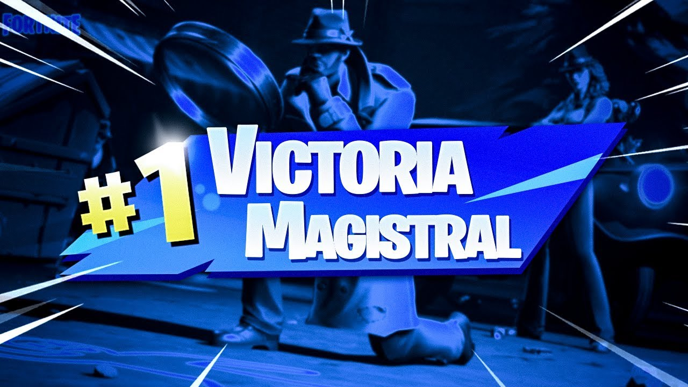

Fortnite Battle Royale es un videojuego multiplataforma gratuito perteneciente al género de Battle Royale desarrollado y publicado por Epic Games. Fue lanzado como un título con acceso anticipado para Microsoft Windows, macOS, PlayStation 4, Xbox One el 26 de septiembre de 2017, seguido de iOS, Android y Nintendo Switch.
 Consiste en que 100 jugadores caen de un autobus en un mapa bastante grande, tiene como objetivo ser el ultimo jugador con vida de estos 100 diferentes jugadores, si mueres se acaba la partida para ti, una partida suele durar hasta 20 min depende de cuanto tiempo sobrevivas.
Para obligar que estos jugadores se lleguen a enfrentar o morir, consiste en que una tormenta llega al mapa y tienes que huir de esta tormenta para que no te mate, esto obliga a que los jugadores tengan que enfrentarse para hacer mas frenetico el juego y no sea aburrido donde los jugadores se queden un solo lugar en toda la partida.
 
 Fortntie cuenta con los siguientes modos de juego: Fiesta Magistal, Modo creativo y Salvar al mundo (Este ultimo modo es de pago).
Fiesta Magistral:
Consiste en un espacio de convivencia en donde uno puede ir a relajarse con sus amigos, tiene como atracciones carreras de obstaculos, carreras de barcos, e incluso hacen conciertos en vivo como fue el caso de un concierto de J Balvin un concierto en vivo dado el 1 de noviembre del 2020.
 
Modo creativo:
En este modo como su nombre lo dice puedes sacar tu creatividad y hacer tu propia isla o tambien lo puedes usar para jugar contra tu amigo y mejorar tus habilidades como punteria, cosntruccion y edits, tambien en este modo puedes jugar laberintos o mas minijuegos que puedes jugar, para pasar el rato solo o con amigos.
Salvar al mundo:
En Salvar el mundo de Fortnite (Este modo de juego es de pago), exploras un mundo enorme y destructible y puedes formar equipo con otros jugadores para contener hordas de monstruos (llamadas cascaras), puedes volverte más fuertes gracias a los botines que puedes encontrar, fabricando armas o expandiendo tu colección de héroes.
  
 